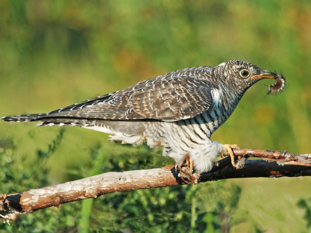
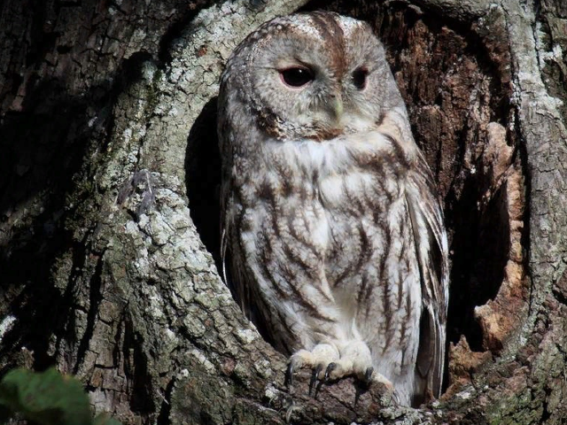
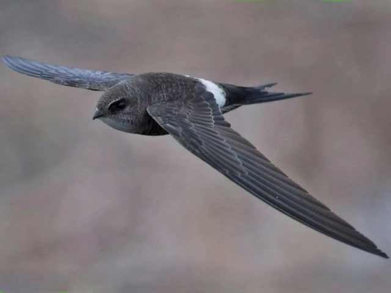
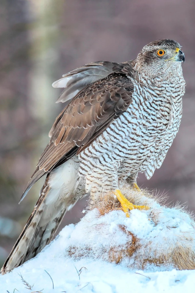

На территории Битцевского леса регулярно гнездятся три вида хищных птиц.
Cамый крупный из гнездящихся в Москве хищников – тетеревятник и соколы
чеглок и пустельга. Тетеревятник гнездится в различных по породному
составу высоковозрастных насаждениях, за добычей же он чаще всего
вылетает в город, где успешно охотится на сизых глубей и ворон.
Единственный представитель отряда Кукушкообразные - обыкновенная
кукушка. Она не так часто отмечается в городских лесопарках, однако в
Битцевском лесу эту птицу можно услышать каждую весну и лето. Для
размножения кукушка использует здесь в основном зарянку и лесного
конька, в чьи гнезда она подкладывает свои яйца, но успешно выкормить
кукушонка в условиях городского лесопарка им удается далеко не всегда.
Совы, несмотря на свои относительно крупные размеры, способны гнездиться
даже в городских лесопарках, если там имеются надежные укрытия и
достаточно многочисленны мышевидные грызуны, составляющие основу их
питания. В Битцевском парке и его окрестностях регулярно гнездятся
совы-неясыти и пары ушастых сов. Неясыть предпочитает старые липняки,
где есть необходимые им крупные дупла, а выводок ушастой совы обычно
отмечается на Лысой горе. Здесь они охотятся на полевок, а свои гнезда
чаще всего устраивают в старых сорочьих гнездах. Черный стриж в условиях
Москвы – не лесной вид, и в Битцевском лесу и его окрестностях гнездится
только на разного рода строениях, хотя за мелкими летающими насекомыми
стрижи чаще охотятся над лесом и открытыми пространствами.
|  |  |  |  |
Кукушка |
|
Сова |
|
Чёрный стриж |
|
Тетеревятник |